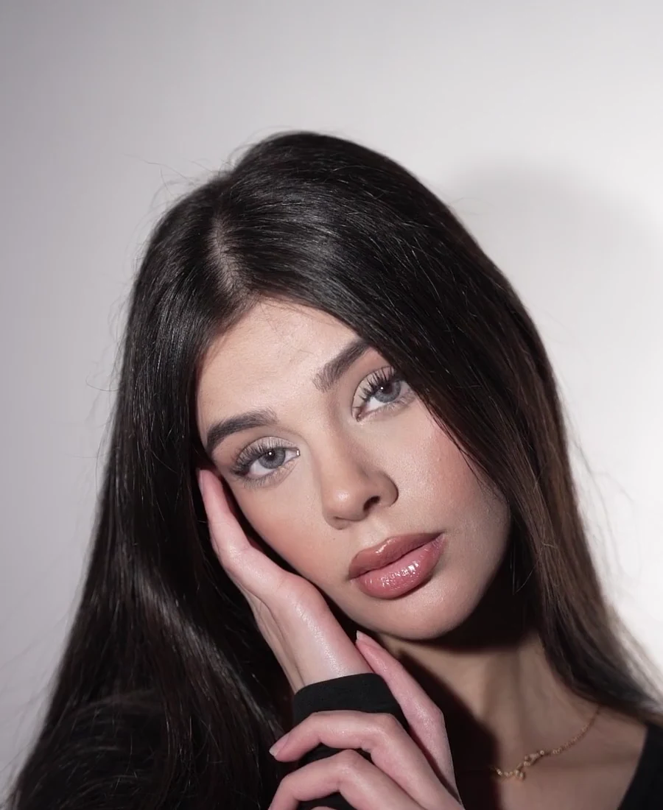
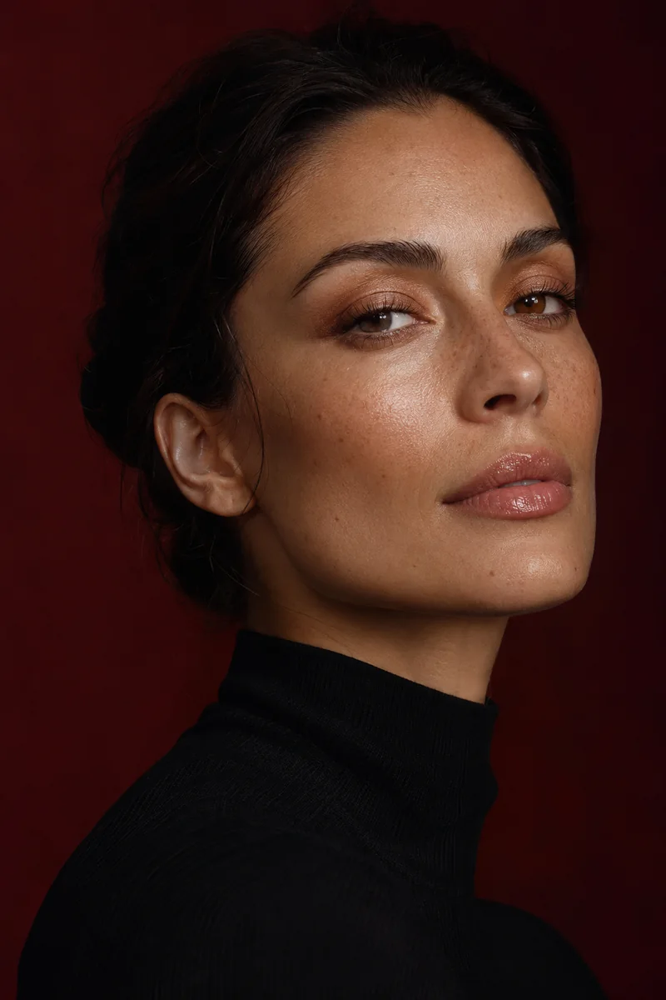
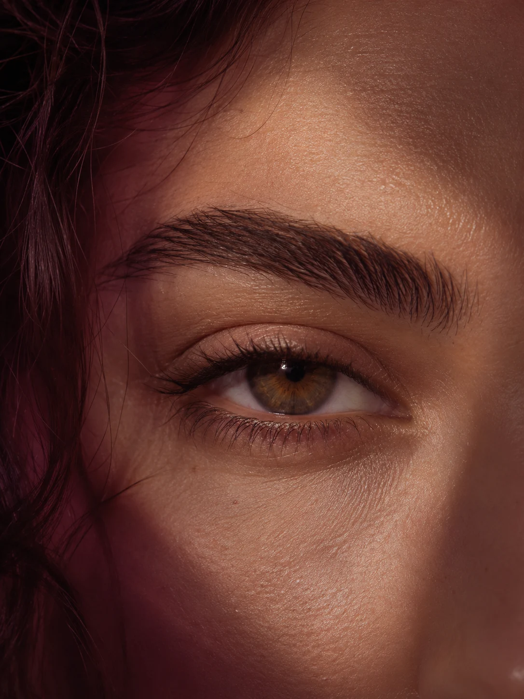
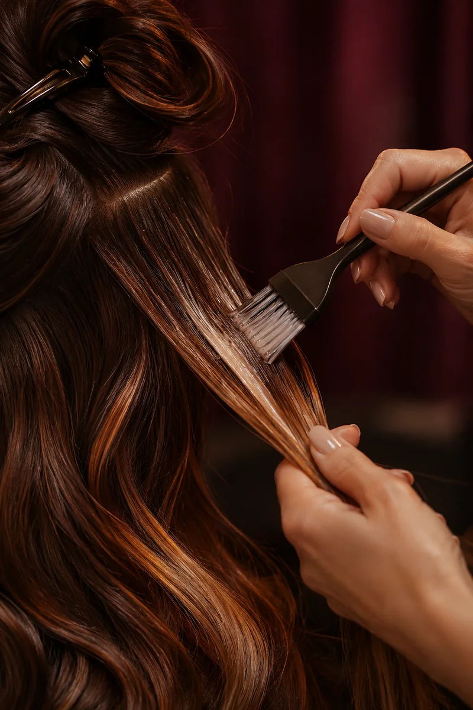

Волосы
ВолосыСтрижка и укладка
6 500 ₽75 мин

Ателье красоты Москва
От графичного каре до оттенка губ. Соберите свой образ в MUSE.
Услуги и цены
Волосы6 500 ₽75 мин

Макияж7 500 ₽75 мин
 Ногти
Ногти4 200 ₽90 мин

Брови3 500 ₽45 мин
Демонстрационный прайс. Цены и время указаны для примера.
Художественные образы, созданные для концепции MUSE.

Ровный оттенок с глубиной и блеском. Обсуждение цвета, окрашивание и завершающая укладка.
Состав и этапыДемонстрационные услуги и цены

Пространство MUSE
Вишнёвый камень у входа, тёплое дерево и дневной свет у зеркал.
Рассмотреть интерьер